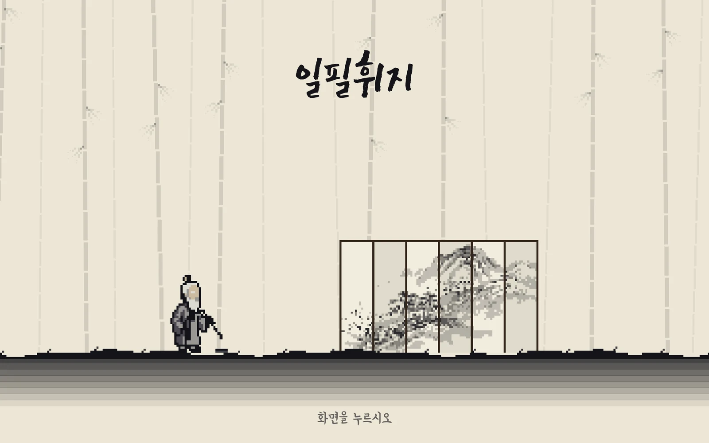

일필휘지
플레이어가 붓이 되어 그은 획이 다리가 되고 칼이 되는 수묵 액션.
- 지금 상태
- PC 실행본은 맵 20장 넘게 이어져요. 웹에서는 1장 '사계' 맛보기만 할 수 있어요(PC 브라우저).
- 내가 정한 것
- 이름, 그리고 직접 해 보며 짚은 문제들. 해 보고 "너무 쉽다"고 짚었고(보스도 일반 귀신처럼 원 세 번이면 끝나는 구조였어요), 이야기 장면에서는 AI 그림을 모두 빼고 픽셀 인물로만 가기로 했어요.
- 알려진 한계
- 다른 사람이 끝까지 해 본 시험이 아직 적어요. 그림 재료 일부는 그림 AI로 만들었어요.
- 써 본 사람
- 재지 않음